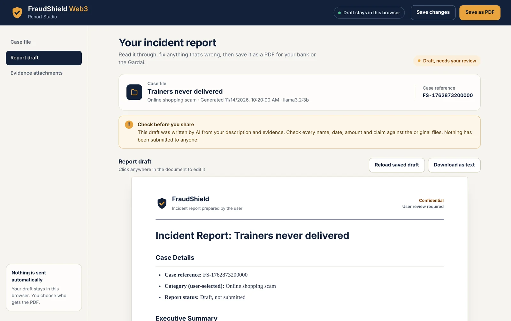
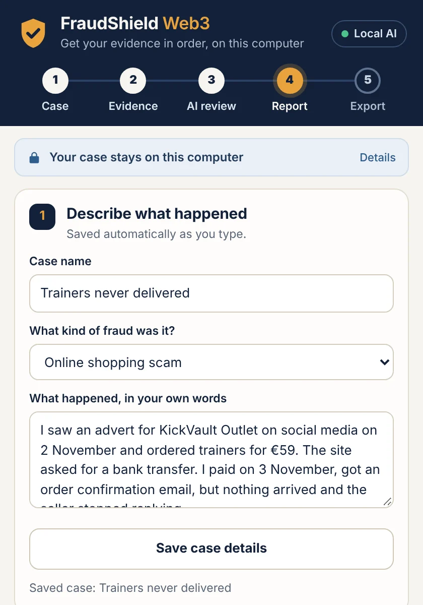
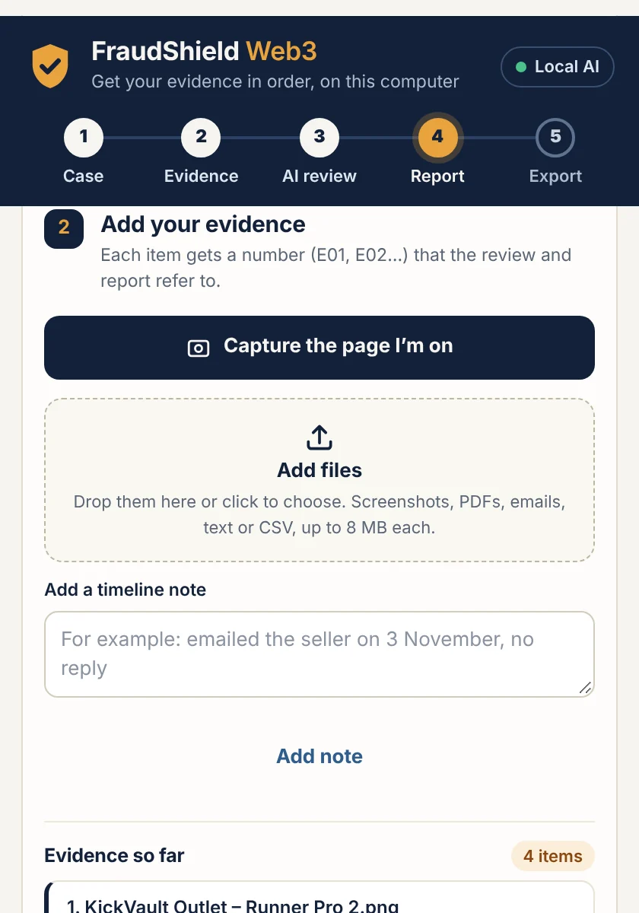
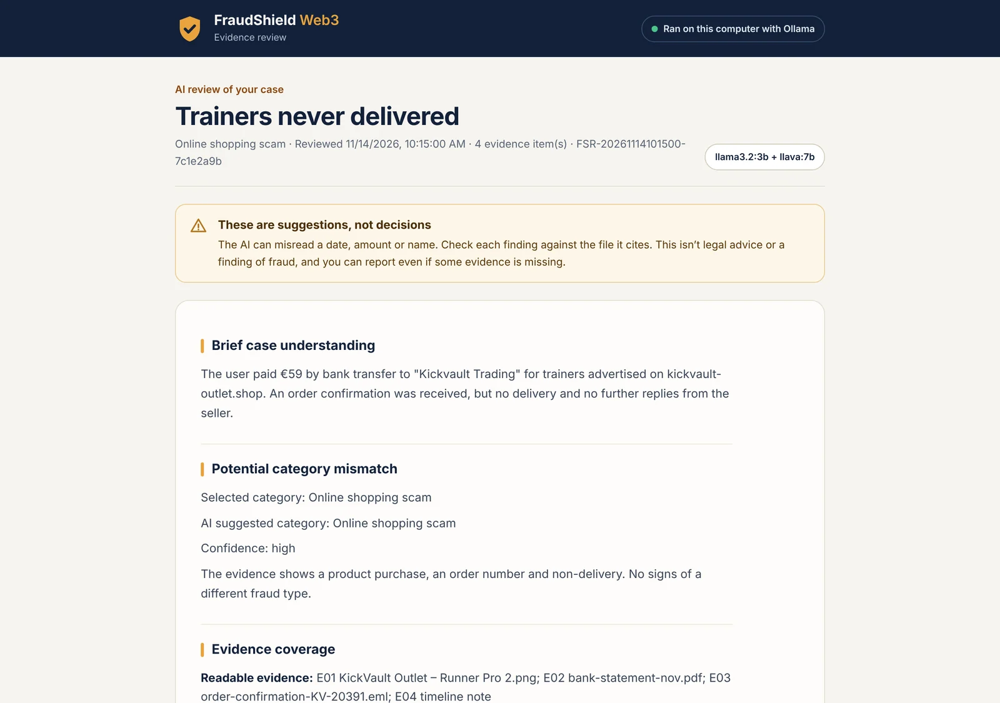

Get your fraud evidence in order before you report it
FraudShield is a Chrome extension that keeps your screenshots, statements and emails in one place, checks them with AI that runs on your own computer, and drafts a clear report you can give to your bank and the Gardaí.
Version 0.10.2, a 0.6 MB ZIP. Free student prototype for Chrome on Windows, macOS or Linux. The AI part needs Ollama.


Your case, step by stepCase, evidence, AI review, report, export.
38%
of fraud victims in a 2026 Central Bank of Ireland survey didn’t report it to anyone. Working out where to go, and pulling evidence together from emails, screenshots and bank statements, is part of what puts people off.
Source: Central Bank of Ireland, “Caught in the net”, Research Technical Paper 2026 No. 7.How it works
You go through five steps, at your own pace. Everything saves as you go, so you can stop and come back later.
Put the case together
- 1Describe what happenedPick the type of fraud and write it in your own words.
- 2Add your evidenceCapture the scam webpage you’re looking at, or drop in PDFs, screenshots, emails and receipts. Each one gets a number, E01, E02 and so on.

Check it, then write it up
- 3Review it with local AIThe AI lists the facts it finds and the file each came from, flags conflicts such as two different payment dates, and suggests what might be missing. It never changes anything without asking.
- 4Draft your reportYou get a structured report for your bank and the Gardaí in the Report Studio. Edit any part of it, then save it as a PDF.
- 5Protect and exportFingerprint each file with SHA-256 so you can show later that it hasn’t changed, then save the whole case to your computer.

Screens show a made-up case.
What stays on your computer
Fraud evidence is personal. FraudShield is built so that it doesn’t leave your machine unless you choose to send it.
AI runs locally
Reviews and drafts use Ollama on your own computer. The extension only has permission to reach that local address, and it doesn’t use a cloud AI service.
No account, no server
Your case and evidence are kept in Chrome’s storage for the extension. We never receive them.
Nothing is sent for you
FraudShield prepares your report. You decide who gets it, and every page says it hasn’t been submitted.
Proof files haven’t changed
SHA-256 fingerprints and a manifest show a file is the same one you added. They can’t prove a screenshot is genuine, so keep your originals.
Install it in about ten minutes
FraudShield isn’t in the Chrome Web Store yet, so you load it yourself. Use made-up details while you try it.
Install Ollama
Download it from ollama.com/download and open it once so it runs in the background.
Download the AI models
In a terminal, get the text model. The vision model is optional and lets the AI read screenshots and scanned PDFs.
ollama pull llama3.2:3bollama pull llava:7bLet Chrome talk to Ollama
Set this environment variable, then quit and restart Ollama. On Windows you can add it under Environment Variables in Settings.
OLLAMA_ORIGINS=chrome-extension://*Load the extension
Unzip the download. Open
chrome://extensions, turn on Developer mode, click Load unpacked and choose theFraudShield-Web3folder.Start a case
Pin FraudShield from Chrome’s puzzle-piece menu, click the shield and follow the steps.
Questions
I’ve just been scammed. What should I do first?
Contact your bank straight away, using the number on your card or their official website, and report it to An Garda Síochána. Don’t wait until your evidence is perfect. FraudShield can help you put things in order alongside that, and you can report even if some evidence is missing.
Is this an official way to report fraud?
No. It’s a student prototype that helps you prepare. A report only counts once you give it to your bank, the Gardaí or another body yourself.
Does it decide whether I was defrauded, or whether I’ll get a refund?
No. It organises what you have and points out gaps and conflicts. It doesn’t judge whether evidence is genuine, give legal advice or predict refunds.
Can the AI get things wrong?
Yes. Small local models can misread an amount, a date or a name. Every fact it lists shows the file it came from, so check each one against the original before you use the report.
What computer do I need?
Chrome on Windows, macOS or Linux, and enough memory and disk space to run the models in Ollama. The vision model is larger and slower, so skip it on an older machine. Text, PDF and email evidence still work without it.
How do I delete a case?
Use “Delete local case data” in the extension. In version 0.10.1 this removes the case and its evidence but not a saved AI review or report draft. Removing the extension clears everything it stored.